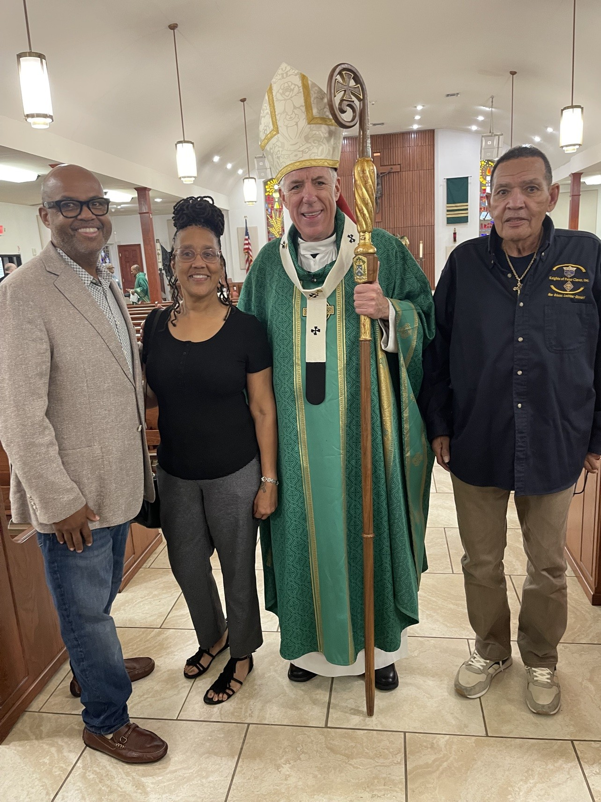

St. David Catholic Church, St. Claude Avenue. My family parish since 1937 — since the beginning. Today my father, my cousin Denise, and I welcomed Archbishop James Checchio — the 15th Archbishop of New Orleans — to our parish home. This church was built by the Josephite fathers for Black Catholics. Katrina tried to take it in 2005. The people brought it back and never let go. My father wears the Knights of Peter Claver. I carry his name because he poured everything into me. Some Sundays you stand in the room and feel the whole story around you. Today was one of them.